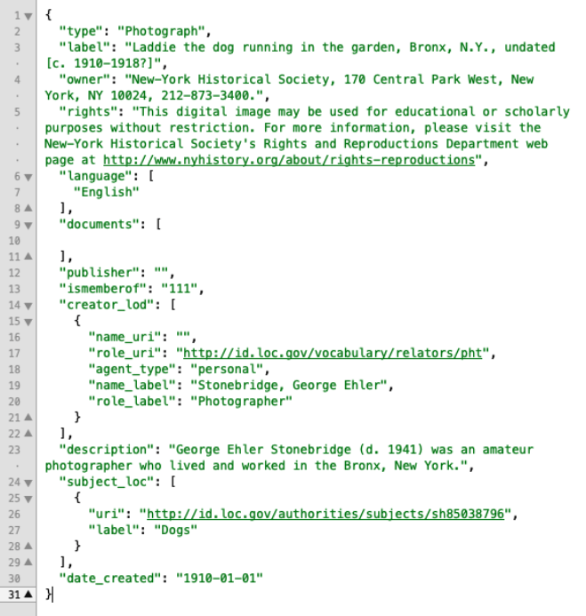
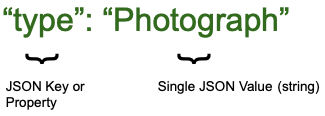
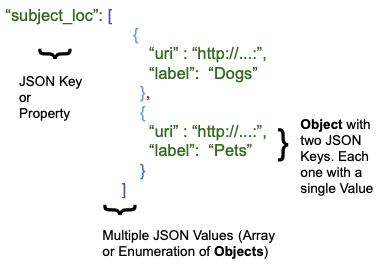

Working with Twig in Archipelago
The following information can also be found in this Presentation from the "Twig Templates and Archipelago" Spring 2021 Workshop: - Twig Templates and Archipelago
Prequisites (with food analogy)
- Know your Data/Metadata. What do I have? :thinking:
- What do I have in my Fridge? Do I have Tofu? Do I have Peppermint :candy:? One Bunch?
- Know your final desired output Document: MODS, HTML, GEOJSON, etc.
- What are you going to cook :cook:? Do you have a picture of the Curry :curry:? Have you ever had Curry :stew:?
- Know your Twig Basics
- How to cut and dice :knife:, steam and sauté :bowl_with_spoon:
- Do not be afraid
- You can’t get burned :fire: here and Ingredients :strawberry: do not expire!
- Ask for help. Slack/Google Groups/Postcards :email: :mailbox_with_mail:
- Seeing others cook helps and also motivates. Others may share some spices. :hot_pepper:
- Use and Share your findings!
- Eat what you cook. :cookie: Share with friends and family. :cake:
Note about the Examples:
All examples shown below are using the following JSON snipped from Laddie the dog running in the garden, Bronx, N.Y., undated [c. 1910-1918?].
Click to view image of the JSON snippet.

Click to view this snippet as JSON.
{
"type": "Photograph",
"label": "Laddie the dog running in the garden, Bronx, N.Y., undated [c. 1910-1918?]",
"owner": "New-York Historical Society, 170 Central Park West, New York, NY 10024, 212-873-3400.",
"rights": "This digital image may be used for educational or scholarly purposes without restriction. Commercial and other uses of the item are prohibited without prior written permission from the New-York Historical Society. For more information, please visit the New-York Historical Society's Rights and Reproductions Department web page at http:\/\/www.nyhistory.org\/about\/rights-reproductions",
"language": [
"English"
],
"documents": [],
"publisher": "",
"ismemberof": "111",
"creator_lod": [
{
"name_uri": "",
"role_uri": "http:\/\/id.loc.gov\/vocabulary\/relators\/pht",
"agent_type": "personal",
"name_label": "Stonebridge, George Ehler",
"role_label": "Photographer"
}
],
"description": "George Ehler Stonebridge (d. 1941) was an amateur photographer who lived and worked in the Bronx, New York.",
"subject_loc": [
{
"uri": "http:\/\/id.loc.gov\/authorities\/subjects\/sh85038796",
"label": "Dogs"
}
],
"date_created": "1910-01-01"
}
First: Know Your Data
Understanding the basic structure of your JSON data.
-
Single JSON Value.
 - For
"type": "Photograph"- "type" = JSON Key or Property - "Photograph" = Single JSON Value (string) -
Multiple JSON Values (Array of Enumeration of Strings)
 - For
- For "language": ["English","Spanish"]- "language" = JSON Key or Property - "["English","Spanish"]" = Multiple JSON Values (Array of Enumeration of Strings) -
Multiple JSON Values (Array of Enumeration of Objects)
 - For
"subject_loc":[{"uri":"http://..","label":"Dogs"},{"uri":"http://..","label":"Pets"}]- "subject_loc" = JSON Key or Property - [{"uri":"http://..","label":"Dogs"},{"uri":"http://..","label":"Pets"}] = - Object with two JSON Keys. Each one with a single Value - Multiple JSON Values (Array of Enumeration of Objects)
Getting Started with the Twig Language in Archipelago
-
Data is known as Context in Twig Lingo.
-
All your JSON Strawberryfield Metadata is accessible inside a Variable named data in your twig template.
-
You can access the values by using
data DOT Property (attribute) Name.- In the Laddie the Dog example shown above:
data.typewill contain "Photograph"data.languagewill contain [ "English" ]data.language[0]will contain "English"- 0 means first entry in an Array or Enumeration
data.subject_locwill contain [{ "uri":"http…","label": "Dog" }]data.subject_loc.uriwill contain"http://id.loc.gov/…"data.subject_loc.labelwill contain "Dog"
- In the Laddie the Dog example shown above:
-
Please note: you also have access to other info in your context
node: such asnode.idis the Drupal ID of your Current ADO; Alsois_front,language,is_admin,logged_inand more!
Twig Statements and Printing
- https://twig.symfony.com/doc/3.x/templates.html
- Simple examples using Printing Statements
- Single JSON Value Example:
- Twig template: ```twig Hello I am a {{ data.type }} and very happy to meet you ````
- Rendered output:
Hello I am a Photograph and very happy to meet you
- Multiple JSON Values Example:
- Twig template: ```twig Hello I was classified as "{{ data.subject_loc.label }}" and very happy to meet you ````
- Rendered Output:
Hello I was classified as "Dogs" and very happy to meet you
- Single JSON Value Example:
Twig Statements and Executing
- https://twig.symfony.com/doc/3.x/tags/if.html
-
Rendered Output based upon different Twig
conditionals,operators,tests,assignments, andfilters -
Example 1:
- Twig template:
{% if data.subject_loc is defined %} Hey I have a Subject Key {% else %} Ups no Subject Key {% endif %} - Rendered Output:
Hey I have a Subject Key
- Conditionals, Operator, and Test usage:
- If/else are conditionals
- is is an operator
- defined is a test
- Twig template:
-
Example 2:
- Twig template:
``twig{% for key, subject in data.subject_loc %}- Subject {{ subject.label }} found at position {{ key }} {% endfor %}` ````
- Rendered Output:
* Subject Dogs found at position 0
- Loop usage:
- for is a loop
- Inside the loop you have access to key, subject
- Twig template:
-
Example 3
- Twig template:
``twig{% for subject in data.subject_loc %} {% set label_lowercase = subject.label|lower %} My lower case Subject is {{ label_lowercase }} {% endfor %}` ```` - Rendered Output:
My lower case Subject is dogs
- Assignment, Filter, and Loop uage:
- set is an assignment
- | is a pipe, used after a value to apply a filter.
- lower is a filter
- Inside the loop you have have access to subject and label_lowercase
- Twig template:
-
Example 4:
- Twig template:
{% for subject in data.subject_loc %} {% set label_lowercase = subject.label|lower %} My lower case Subject is {{ label_lowercase }} {% endfor %} {# This won’t display because it was assigned inside The For Loop #} {{ label_lowercase }} - Rendered Output:
My lower case Subject is dogs
- Twig template:
Full Examples for Common Uses Cases:
Use case #1: I have multiple LoD Subjects and want to display them in my page as a clickable ordered list but i’m a safe/careful person.
Twig Example for Use Case #1:
{% if data.subject_loc is iterable and data.subject_loc is not empty %}
<h2>My Subjects</h2>
<ul>
{% for subject in data.subject_loc %}
<li>
<a href="{{ subject.uri }}" title="{{ subject.label|capitalize }}" target="_blank">
{{ subject.label }}
</a>
</li>
{% endfor %}
</ul>
{% endif %}
Twig Example for Use Case #2:
{% if data.date_published is not empty %}
<h2>Date {{ data.label }} was published:</h2>
<p>
{{ data.date_published|date("F jS \\o\\f Y \\a\\t g:ia") }}
</p>
{% endif %}
date in this Use Case #2 Twig Example:
- date() is a function
- It uses a “Date Format Pattern” as argument.
Use Case #3 (Full Curry): {# May 4th 2021 @dpino: I have sometimes a user provided creation date. I want to show it in beautiful human readable language but fallback to automatic date if absent. I also want in the last case to show it was either “created” or “updated”. #}
"as:generator": {
"type": "Update",
"actor": {
"url": "https:\/\/archipelago.nyc\/form\/descriptive-metadata",
"name": "descriptive_metadata",
"type": "Service"
},
"endTime": "2021-03-17T13:24:01-04:00",
"summary": "Generator",
"@context": "https:\/\/www.w3.org\/ns\/activitystreams"
}
Twig Example for Use Case #3:
{% if data.date_created is not empty %}
<h2>Date {{ data.label }} was created:</h2>
<p>
{{ data.date_created|date("F jS \\o\\f Y \\a\\t g:ia") }}
</p>
{% else %}
<h2>Date {{ data.label }} was {{ attribute(data, 'as:generator').type|lower }}d in this repository:</h2>
<p>
{{ attribute(data, 'as:generator').endTime|date("F jS \\o\\f Y \\a\\t g:ia") }}
</p>
{% endif %}
A Recommended Workflow
You want to create a New Metadata Display(HTML) or a new (XML) Schema based format?
- Get yourself an example document (Frame). If HTML copy the source. If XML copy the full XML thing (cmd+c)
- Create a new Metadata Display Entity. Copy the content (text) of your Frame into the Edit window (cmd+v)
- Select an existing (as complete as possible) ADO to use as preview, press Preview
- Put your nice glasses :nerd_face: on. What do you see? What data in your Frame do you have in your ADO (data)?
- Start nimble. Selected the
data.labelinfo, check where your Frame uses a Title or a Label. Remove that text (cmd+x) and replace with a{{ data.label }}. Press Preview. Do you see your title? - Keep doing 6, over and over. Leave complex values for the end. (e.g
data.subject_loc) - Document your changes
{# I added this because .. #} - Save
Once the Template is in place you can use it in a Formatter, as Endpoint, in your Search Results or just keep it around until you and the world are ready!
And now it's your turn!
We hope you found the information presented here to be helpful in getting started working with Twigs in Archipelago. Click here to return to the main Twigs in Archipelago documentation. Happy Twigging!
Thank you for reading! Please contact us on our Archipelago Commons Google Group with any questions or feedback.
Return to the Archipelago Documentation main page.